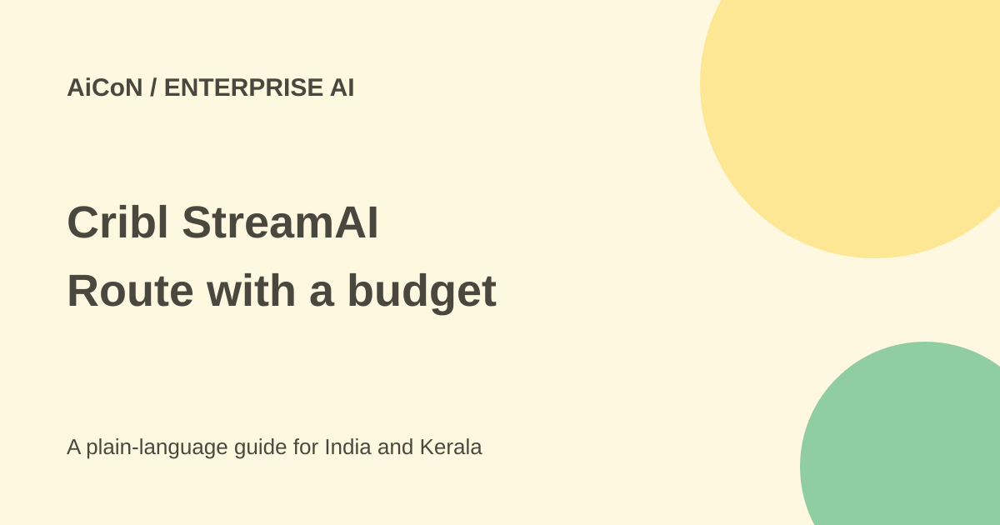

Cribl StreamAI: scoped free inference, not a free chatbot
StreamAI is an announced enterprise AI gateway for telemetry work. Cribl limits its free-inference claim to customers using automatic routing to its benchmarked models.

What is StreamAI?
Cribl's September announcement describes an AI gateway with a model router built into its data platform. It routes prompts and workloads across proprietary and open-source models based on the job and cost, rather than always choosing the most expensive model.
The target is an organisation handling IT and security telemetry, such as incident data, logs and operational investigations. It is not presented as a consumer chatbot for casual questions. A student can study the idea without assuming access to the enterprise product.
What does free inference cover?
The release says inference is free for customers using automatic data routing to benchmarked AI models. That is a specific offer. It does not say every model, manually selected route, platform subscription, infrastructure component or external service is free.
The checked release says availability and supported providers will be announced at CriblCon. The related blog describes what was announced but does not establish a generally available signup, all-account entitlement or complete tariff. Confirm access and contractual terms with the current official account route before planning a rollout.
Do not turn the headline into unlimited free AI for everyone. Ask which models and workflows qualify, whether there are usage limits and what costs remain outside the offer. This guide did not activate an enterprise account or run inference.
Why route between models?
Cribl says its SecIT Bench evaluated 20 models on 30 real-world IT and security investigations. Its reported results found a 17% spread in diagnostic accuracy and a 20-fold range in investigation spend. These are Cribl's benchmark figures, not independent proof that one router always selects the right model.
A cheaper model can be a good fit for a routine task while another handles a harder investigation. But your data, required reliability and tool use may differ from the benchmark. Evaluate the actual workload rather than buying from an overall score.
Budget controls and fallback
The announcement describes budgets, spending cutoffs, token circuit breakers and automatic fallback to another model when an application reaches a cost limit. These controls aim to keep usage predictable.
A fallback can change answer quality, behaviour or latency. Test what happens when the budget is exhausted, when no suitable provider is available and when a tool call fails. Confirm whether a limit blocks work, changes the route or permits some costs already in flight. Public marketing alone does not define every boundary.
Security controls are useful, not magic
Cribl describes sensitive-data redaction in both outgoing prompts and incoming responses, malicious-request controls and records of every model call and routing decision as audit-ready telemetry. It connects this with its telemetry-focused Cribl-Privacy model.
Those are product claims. Redaction can miss a secret, and audit logs themselves can contain sensitive information. Confirm provider destinations, retention, access roles and the contents of logs. Keep production credentials out of test prompts and use approved data-processing arrangements.
How an IT team can evaluate it
- Check current availability and get the exact free-routing scope and remaining charges.
- Identify a small authorised workload with measurable success criteria.
- Use redacted telemetry and define which providers may receive it.
- Set a budget and test normal, limit-hit and provider-failure cases.
- Compare answers across primary and fallback models.
- Review prompt, response and routing logs for useful evidence and unwanted data.
- Expand only after security, billing and operational owners accept the result.
For organisations in India
Check your own data-location, procurement and incident-response requirements. The international announcement does not settle India-specific hosting or contract terms. A Kerala business handling customer data should establish where that data travels before using a gateway, even when inference is described as free.
What changed since the original post?
This guide keeps the benchmark attributed and narrows the free claim to the stated routing offer. It adds availability uncertainty and explains that fallback and redaction need testing, rather than treating them as guarantees of cost or safety.
Frequently asked questions
Is every model free?
No such universal offer is established.
Can anyone sign up now?
General public access was not verified.
Was a budget cutoff tested?
No. The guide checks announced features and proposes evaluation steps.
Sources: Official launch · Platform announcement. Checked 7 October 2026.